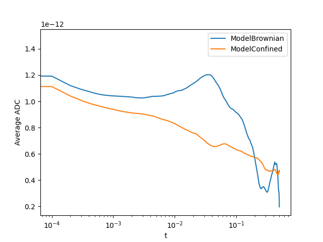

Note
Click here to download the full example code
TRAIT Tutorial¶
This example demonstrates some of the library’s core features, namely simulation and analysis of 2D diffusion tracks. You will learn about:
Simulation¶
- Simulating multiple tracks with different diffusion models
Analysis¶
- Apparent Diffusion Coefficient (ADC) analysis of a single track
- ADC analysis of multiple tracks in bulk
- Retreiving an analysis summary of multiple tracks
- Filtering tracks by diffusion category
Simulate tracks¶
First, import the required simulators:
from trait2d.simulators import BrownianDiffusion
from trait2d.simulators import HoppingDiffusion
A simulator can be initialised with different parameters. For Brownian diffusion, we choose the following:
params = dict()
params["Tmax"] = 0.5 # Maximum simulation time (s)
params["dt"] = 1e-4 # Simulation time resolution (s)
params["dL"] = 1e-12 # Simulation spatial resolution (m)
params["d"] = 1e-12 # Diffusion coefficient (m^2/s)
params["L"] = 1e-5 # Simulation domain size (m)
params["seed"] = 42 # Seed to initialize the random generator (for reproducibility)
params["quantize"] = False # Quantize the position to the simulation spatial resolution grid.
simulator_brownian = BrownianDiffusion(**params)
Parameters differ between simulators.
params = dict()
params["Tmax"] = 0.5 # Maximum simulation time (s)
params["dt"] = 1e-4 # Simulation time resolution (s)
params["dL"] = 1e-8 # Simulation spatial resolution (m)
params["Df"] = 8e-13 # Free diffusion coefficient [m^2/s]
params["L"] = 1e-5 # Simulation domain size (m)
params["HP"] = 0.01 # Hopping probability [0-1]
params["HL"] = 1e-6 # Average compartment diameter/length [m]
params["seed"] = 42 # Seed to initialize the random generator (for reproducibility)
params["quantize"] = False # Quantize the position to the simulation spatial resolution grid.
simulator_hop = HoppingDiffusion(**params)
After initialisation the simulations can be run. The results will be stored in the simulator object.
simulator_brownian.run();
simulator_hop.run();
Out:
Free diffusion simulation was completed in 5000 iterations.
Hopping diffusion simulation was completed in 5000 iterations.
The simulated trajectoies can be plotted:
simulator_brownian.plot_trajectory()
simulator_hop.plot_trajectory()

It is also possible to export the simulated tracks as videos using the trait2d.simulators.iscat_movie class. Currently, the tracks need first to be saved e.g. as a .csv using BrownianDiffusion.save() (or any other Diffusion model) and then load them again using iscat_movie.load_tracks(). You also need to load a PSF with iscat_movie.load_psf().
Analyse tracks¶
Before we start fitting our data, we need to add some models. trait2d.analysis.models contains a few models that we can add to ModelDB. All models added this way will be used during analysis.
from trait2d.analysis import ModelDB
from trait2d.analysis.models import ModelBrownian, ModelConfined, ModelHop
ModelDB().add_model(ModelBrownian)
ModelDB().add_model(ModelConfined)
ModelDB().add_model(ModelHop)
Single tracks are stored in a Track object.
from trait2d.analysis import Track
We can create a single track from our last simulation:
single_track = Track.from_dict(simulator_brownian.trajectory)
We can now do ADC analysis on the track:
results = single_track.adc_analysis(fit_max_time=0.5e-1)
Analysis results like the calculated values for \(D_{app}\), fit parameters and much more are returned in a dictionary. We can also retreive the dictionary of the last analysis at any time with get_adc_analysis_results.
fit_results = results["fit_results"]
best_model = results["best_model"]
print(fit_results)
print(best_model)
single_track.plot_adc_analysis_results()
Out:
{'ModelBrownian': {'params': array([1.07105773e-12, 4.80247510e-09]), 'errors': array([1.56731649e-15, 2.13640549e-10]), 'bic': -30815.35406965663, 'KSTestStat': 0.4899598393574297, 'KStestPValue': 1.360060612689e-54, 'rel_likelihood': 1.0}, 'ModelConfined': {'params': array([1.07124742e-12, 4.79177482e-09, 7.78010859e+01]), 'errors': array([1.56937434e-15, 2.14071401e-10, 1.85199562e-23]), 'bic': -30809.104349829537, 'KSTestStat': 0.4899598393574297, 'KStestPValue': 1.360060612689e-54, 'rel_likelihood': 0.04394308902372975}, 'ModelHop': {'params': array([1.07216411e-12, 5.41041970e-15, 2.48834294e-09, 8.62057810e-08]), 'errors': array([1.67695715e-15, 2.67932474e-10, 1.76694922e-09, 1.68158893e-17]), 'bic': -30759.82902986644, 'KSTestStat': 0.5, 'KStestPValue': 6.022118832188125e-57, 'rel_likelihood': 8.767803455395955e-13}}
ModelBrownian
Multiple tracks are then stored in a ListOfTracks object.
from trait2d.analysis import ListOfTracks
For now, we just simulate some more tracks and create a single ListOfTracks from these tracks. Multiple tracks can also be loaded from a single file using ListOfTracks.from_file().
import random
tracks = []
for i in range(10):
simulator_brownian.run()
simulator_hop.run()
tracks.append(Track.from_dict(simulator_brownian.trajectory))
tracks.append(Track.from_dict(simulator_hop.trajectory))
tracks = ListOfTracks(tracks)
Out:
Free diffusion simulation was completed in 5000 iterations.
Hopping diffusion simulation was completed in 5000 iterations.
Free diffusion simulation was completed in 5000 iterations.
Hopping diffusion simulation was completed in 5000 iterations.
Free diffusion simulation was completed in 5000 iterations.
Hopping diffusion simulation was completed in 5000 iterations.
Free diffusion simulation was completed in 5000 iterations.
Hopping diffusion simulation was completed in 5000 iterations.
Free diffusion simulation was completed in 5000 iterations.
Hopping diffusion simulation was completed in 5000 iterations.
Free diffusion simulation was completed in 5000 iterations.
Hopping diffusion simulation was completed in 5000 iterations.
Free diffusion simulation was completed in 5000 iterations.
Hopping diffusion simulation was completed in 5000 iterations.
Free diffusion simulation was completed in 5000 iterations.
Hopping diffusion simulation was completed in 5000 iterations.
Free diffusion simulation was completed in 5000 iterations.
Hopping diffusion simulation was completed in 5000 iterations.
Free diffusion simulation was completed in 5000 iterations.
Hopping diffusion simulation was completed in 5000 iterations.
In order to set initial parameters or bounds for the fits, we need to modify the models inside ModelDB. These will then be applied during all analysis from this point on.
ModelDB().get_model(ModelBrownian).initial = fit_results["ModelBrownian"]["params"]
ModelDB().get_model(ModelConfined).initial = fit_results["ModelConfined"]["params"]
ModelDB().get_model(ModelHop).initial = fit_results["ModelHop"]["params"]
Here, we set all initial parameters to the results of our single fit from before.
Now that we set our initial guesses, let’s analyse the remaining tracks at once.
Enabling logarithmic sampling is a good idea since the time axis will be scaled logarithmically by default. We can also set the maximum time on the time for which to fit.
adc_analysis will return a list containing the indices of all tracks for which a fit has failed. These can then be retreived with get_track and analysed further.
tracks.adc_analysis(fit_max_time=50e-3, enable_log_sampling=True)
Out:
/home/runner/work/TRAIT2D/TRAIT2D/trait2d/analysis/__init__.py:346: UserWarning: ADC analysis failed for 8/20 tracks. Consider raising the maximum function evaluations using the maxfev keyword argument. To get a more detailed stacktrace, run the ADC analysis for a single track.
warnings.warn("ADC analysis failed for {}/{} tracks. "
[1, 3, 5, 8, 9, 11, 13, 17]
adc_summary gives an overview of the analysis results including optional plots, the averaged parameters for each model, the averaged MSD for each model and the averaged $D_{app}$ for each model.
(We need to set interpolation = True since some of the time differences in the simulated tracks deviate slightly from the expected value.)
tracks.adc_summary(plot_dapp=True, plot_pie_chart=True, interpolation=True)
- 

Out:
{'sectors': {'ModelBrownian': 0.15, 'ModelConfined': 0.45, 'not catergorized': 0.4}, 'average_params': {'ModelBrownian': array([1.02546269e-12, 7.65322922e-09]), 'ModelConfined': array([9.14812467e-13, 8.03422351e-09, 5.90506323e-02])}, 't': array([0.00000000e+00, 1.00020004e-04, 2.00040008e-04, ...,
4.99799960e-01, 4.99899980e-01, 5.00000000e-01]), 'average_msd': {'ModelBrownian': array([3.97741583e-16, 8.00456570e-16, 1.20152134e-15, ...,
1.63752245e-12, 1.64390583e-12, 1.63813371e-12]), 'ModelConfined': array([3.71496012e-16, 7.42098838e-16, 1.11054343e-15, ...,
9.45356022e-13, 9.48180224e-13, 9.46056761e-13])}, 'average_dapp': {'ModelBrownian': array([1.49153093e-12, 1.20054967e-12, 1.12626212e-12, ...,
8.19471598e-13, 8.22501380e-13, 8.19449366e-13]), 'ModelConfined': array([1.39303137e-12, 1.11299559e-12, 1.04096712e-12, ...,
4.73088110e-13, 4.74406453e-13, 4.73249281e-13])}}
Now that analysis is done we can also retrieve all tracks that fit a certain diffusion category best:
tracks_brownian = tracks.get_sublist(model=ModelBrownian)
tracks_brownian.adc_summary(plot_dapp=True, interpolation=True)
Out:
{'sectors': {'ModelBrownian': 1.0, 'not catergorized': 0.0}, 'average_params': {'ModelBrownian': array([1.02546269e-12, 7.65322922e-09])}, 't': array([0.000e+00, 1.000e-04, 2.000e-04, ..., 4.998e-01, 4.999e-01,
5.000e-01]), 'average_msd': {'ModelBrownian': array([3.97741583e-16, 8.00376357e-16, 1.20136002e-15, ...,
1.63752284e-12, 1.64391094e-12, 1.63813025e-12])}, 'average_dapp': {'ModelBrownian': array([1.49153093e-12, 1.20056454e-12, 1.12627502e-12, ...,
8.19471628e-13, 8.22503807e-13, 8.19447532e-13])}}
As mentioned before, we can retreive the analysis results for any track, at any time. Single tracks can be received with ListOfTracks.get_track.
tracks_brownian.get_track(0).get_adc_analysis_results()
Out:
{'Dapp': array([1.47182910e-12, 1.18374989e-12, 1.10582574e-12, ...,
3.97828079e-13, 3.88907108e-13, 3.81322523e-13]), 'Dapp_err': array([1.44328380e-12, 1.18333621e-12, 1.09601934e-12, ...,
1.42360068e-14, 1.33248871e-14, 1.78553304e-14]), 'fit_indices': [0, 1, 3, 6, 11, 19, 31, 50, 80, 128, 204, 324], 'fit_results': {'ModelBrownian': {'params': array([1.11722710e-12, 6.03321517e-09]), 'errors': array([2.89658357e-14, 5.53003120e-10]), 'bic': -718.1883068721818, 'KSTestStat': 0.4166666666666667, 'KStestPValue': 0.2557751845677543, 'rel_likelihood': 1.0}, 'ModelConfined': {'params': array([1.11723746e-12, 6.03301772e-09, 4.31332072e+02]), 'errors': array([3.05371027e-14, 5.83004867e-10, 1.08697291e-23]), 'bic': -715.7001346521027, 'KSTestStat': 0.4166666666666667, 'KStestPValue': 0.2557751845677543, 'rel_likelihood': 0.28820417471594434}, 'ModelHop': {'params': array([1.21294933e-12, 1.02327593e-10, 1.23518385e-09, 1.69490920e-09]), 'errors': array([5.62095903e-14, 8.69874120e-08, 1.18488152e-08, 5.25173414e-09]), 'bic': -703.4557108812537, 'KSTestStat': 0.75, 'KStestPValue': 0.0014969550573265746, 'rel_likelihood': 0.0006322042754052308}}, 'best_model': 'ModelBrownian'}
We can also plot them:
tracks_brownian.get_track(0).plot_adc_analysis_results()

It is a good idea to use ModelDB().cleanup() at the end of your notebooks to remove all models again. Otherwise they may carry over into other open notebooks.
ModelDB().cleanup()
Total running time of the script: ( 0 minutes 29.286 seconds)